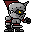
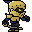
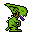
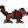
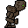
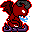

Controls:
Arrow keys to move, or 8 directional movement as below:
y k u
\ | /
h- . -l
/ | \
n j m
g: Pickup item
t: Communicate with your son
s or .: Wait a turn
ENTER to restart if you die
Click on an item in the Items window to use it
Items:
Divine Swiftness - Increase your movement speed
Passage Stone - Passage away, but not safe passage
Oil of Vanishing - Disappear for some time
Shroud of Shadows - Disappear until you move
Bell of Unsounding - Become unheard for some time
Mask of Stillness - Become unheard until you move
Holy Dagger - Smite those who stand in your way. Will seek greatest evil in sight.
Beastiary:
Soldier - A common soldier.
Captain - Commander of armies, swift in movement.
Imp - Lowest among the demonic troops, they hunt with keen eyesight, but poor hearing.
Hell Hound - Demon hounds bred for uncanny hearing.
Golem - A twisted creature of stone, imbued with unnatural sight.
Devil - A lord of the infernal pits; a formidable foe.
"But when you see Jerusalem surrounded by armies, then know that its desolation is near.
Then let those who are in Judea flee to the mountains, let those who are in the midst of her depart, and let not those who are in the country enter her.
For these are the days of vengeance, that all things which are written may be fulfilled.
But woe to those who are pregnant and to those who are nursing babies in those days! For there will be great distress in the land and wrath upon this people."
~Luke 21:20-24
Hush, Little One
Loading assets...
Zer0Games is:
Jon Kelly - Design, Programming
Dan Kelly - Design, Art, Music
Email: zer0castdoom AT gmail DOT com
Twitter:
Source code on
Press '?' in game for help screen